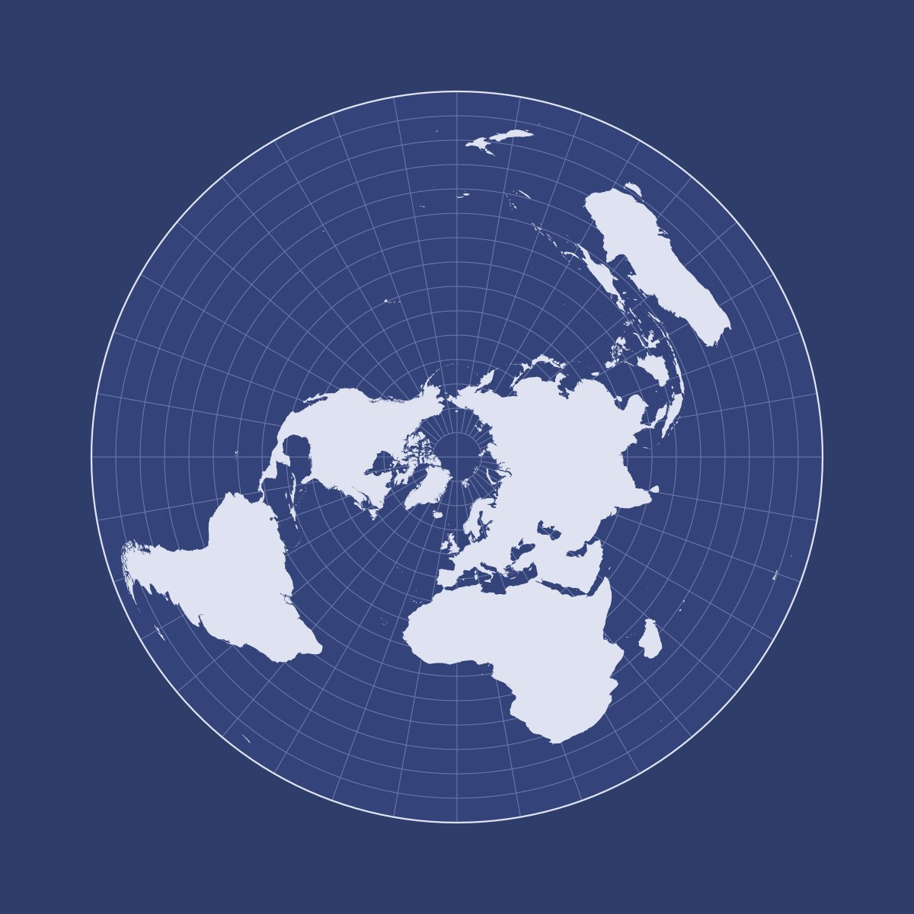
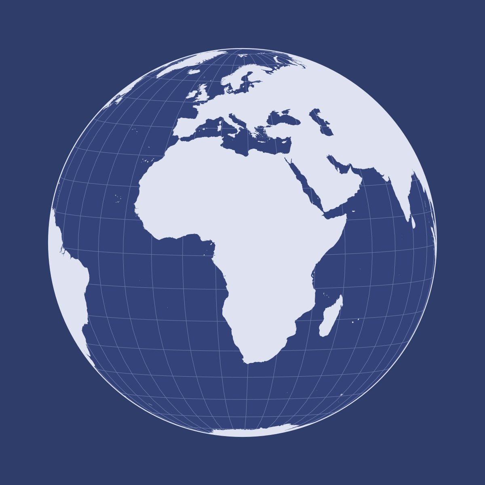

Political philosophy
Pancivism
pan·civ·ism, noun. From Greek pan (all) and Latin civis (citizen). One who holds it is a Pancivist.

Papers and writing
Paper / 2026 / PhilPapersPowers and Principalities: A Death to Nationalism- Read the PDFPaper
- PhilArchivePaper
- Pancivism: an introductionSubstack / Sep 2026
- You Ought to Care About PeopleSubstack / Oct 2026
- SubstackProfile
- PhilPeopleProfile
Definition
Pancivism is the doctrine that moral egalitarianism requires every person to be a citizen of one unified civitas. It holds that the plurality of nation-states is illegitimate because it distributes moral standing and the right to life by national membership, and it calls for a single global polity that guarantees a uniform floor of rights to all persons.
The term was introduced by Joshua Luyali Wangia in "Powers and Principalities: A Death to Nationalism" (2026) and first sketched in "Pancivism: an introduction". It is unrelated to Pan-Slavism, Pan-Africanism, and other pan-nationalist movements, which unify one group; Pancivism rejects national membership as a basis of moral standing altogether.
"Every defense of the border must either honor the outsider's worth or deny it. If you honor it, the boundary should expand to the whole field or be completely open. If you deny the outsider's worth, you throw away egalitarianism and create Agamben's homo sacer. There is no third kind of border. A commitment to equal human rights does require one to become a Pancivist."
Three theses
- IConviction (negative thesis). Any order that conditions protection of rights, or classifies killing differently, by nationality or birthplace creates an arbitrary value-class. What is convicted is the membership index and the wall, not the existence of multiple jurisdictions.
- IIObligation (positive thesis). Persons are owed a single global polity, which the paper calls Pax Mundi, guaranteeing a uniformly administered floor and never legitimizing violation of the right to life. It may have functional sectors, but no walls.
- IIITransformation. Pancivism is identity-forming: participation in the nation-state order incurs a standing compensation debt, discharged through negative duty.
Core argument
A criterion is arbitrary relative to a good when it does not track anything that good is for. Relative to protecting a life, national belonging is arbitrary in exactly the way race, religion, and sex are. Any egalitarian, rights-based, or deontological view that rejects racism and sexism on arbitrariness grounds is therefore committed to rejecting nationalism in all its forms. The paper formalizes this with a clopen argument from point-set topology: if personhood is continuous across a connected moral space, the only membership boundary that is both closed and open is the whole space. Every "moderate" nationalism either expands into Pancivism or collapses into illiberalism.

What Pancivism is not
- Not merely open-borders liberalism (Carens, Cole): an open border between sovereigns still keeps the wall.
- Not merely cosmopolitan redistribution (Pogge, Beitz) within a walled state system.
- Not every world federalism or Kant's federation of free states; federations that keep a moral outside are "nationalism tied together with string."
- Not the abolition of culture, local governance, or particular loyalty.
- Not tied to any economic system; it is system-agnostic.
Joshua Luyali Wangia, University of Pennsylvania.